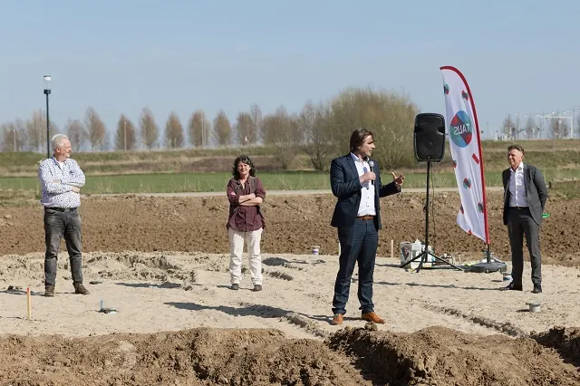

Nieuws ·
Zuiderveld, betaalbaar en samen leven in een Ecodorp

Dit bericht uit ons archief verscheen op 31 maart 2021 op NieuwsNijmegen.nl. Data, tijden en prijzen kunnen inmiddels anders zijn.
Alle bewoners van de 46 nieuwe sociale huurwoningen in Nijmegen-Noord leveren hier een bijdrage
Dinsdag 30 maart was de laatste bewoner van CVEG klaar met het stuk zelfbouw van zijn woning in ‘Ecodorp Zuiderveld’. Een nieuwe woongemeenschap met 46 sociale huurwoningen en -appartementen in Nijmegen-Noord. Een bijzonder moment: na een intensieve samenwerking met bewoners, woningcorporaties Talis en WBVG en ontwikkelende bouwer Trebbe, kan het samen leven voor iedereen beginnen.
‘Wij werken aan buurten en wijken waar iedereen zich thuis voelt, meetelt, gezien wordt en van waarde is. Het samen leven in een woongemeenschap zoals hier, is daar een uitstekend voorbeeld van. Bewoners die wat zorg of wat hulp nodig hebben en bewoners die, zolang dat kan, deze zorg samen op zich willen nemen, wonen vlak bij elkaar en delen voorzieningen. Zo kunnen mensen langer thuis wonen. Dat was de droom waar CVEG ons in 2017 over vertelde toen wij elkaar ontmoetten. Eén die precies aansluit bij waar wij ons hard voor willen maken. Nu komt hun droom uit’, aldus Ronald Leushuis bestuurder van Talis.
Vanuit huis een dankwoord
Leushuis vervolgt: ‘Dat het is gelukt is fantastisch. Ik heb daarom gevraagd aan iedereen die dat wil om bij de achterdeur of in de eigen tuin, op afstand en toch samen stil te staan bij dit prachtige project.’ Dat gebeurt vanaf een bijzondere plek. Achteraan in de gemeenschappelijke tuin gaan bewoners de komende maanden nog zelf de schuur bouwen. Een handje vol mensen die met heeft samengewerkt aan dit project, is ieder bij één bewoner op bezoek, uiteraard ook op voldoende afstand. Zo kan iedereen van de bewoners zelf horen wat zij hopen dat het wonen hier hen brengt en wat zij zelf bij willen dragen. Iedereen helpt elkaar met klussen. Sommigen wonen er al en anderen moeten nog veel doen. Er zijn veel jonge kinderen die met elkaar spelen. De jongste bewoner van Ecodorp Zuiderveld is vijf weken. Zij is hier zelfs geboren.
Het wonen, iedereen telt mee
De komende maanden werken de bewoners aan de flinke gemeenschappelijke tuin. Deze wordt op een ecologische manier aangelegd en onderhouden. Auto’s en apparatuur gaan bewoners delen. Marian Aarts, één van de initiatiefnemers van CVEG ‘We vinden het fijn om op deze bijzondere dag ons huis aan een bezoeker te laten zien en hen te vertellen wat ons drijft. Hopelijk drijft hen dat dan weer om vol enthousiasme voor een volgende woongemeenschap aan de slag te gaan. Ik heb ervaring met soortgelijke initiatieven in het buitenland. Ik wilde ontzettend graag hier aan mee denken en mee bouwen, in eerste instantie niet eens om zelf weer in Nederland te gaan wonen. Het is geworden wat we bedacht hebben: een plek waar we op elkaar letten, zodat je langer mee doet en mee telt. Iedereen levert een bijdrage door iets te doen wat bij hem of haar past. Alle huizen zijn gericht op de tuin, op samen. Ook de buurtbewoners zijn welkom in de ontmoetingsruimten als dat met de maatregelen weer kan.’
Ecologisch bouwen was financieel haalbaar
Bij de bouw van Ecodorp Zuiderveld zijn de moderne technieken om ecologisch te bouwen en te leven gecombineerd met de traditionele waarden van een dorp van vroeger. Het project was financieel haalbaar vanwege de keuze om grotendeels voor standaardconcepten van Trebbe te gaan én vanwege een subsidie van Stichting Volksbelang.
Hoogte 2 Architecten heeft het ontwerp van de woningen, de appartementen en de gemeenschappelijke ruimten gemaakt. Er zijn tal van ecologische voorbeelden in dit project. Zo is bij de bouw isolatiemateriaal van tweedehands textiel in het dak verwerkt. Ook zijn restpartijen baksteen gebruikt. Er zijn verschillende duurzame maatregelen getroffen, die duurzaam wonen en leven, met een lager energieverbruik, mogelijk maken.
Trebbe heeft in Nijmegen-Noord al diverse projecten gebouwd, ook voor Talis. Alleen nooit ecologisch. ‘Met de bouw van dit project kunnen we onze standaarden verder ontwikkelen rondom duurzaam, ecologisch en circulair bouwen. We willen standaarden om woningbouw betaalbaar te houden. Hoe mooi ecologische plannen ook zijn, ze moeten wel kunnen worden betaald. De woongroep heeft ons uitgedaagd en dat is ons gelukt, waarbij we ook echt lessen voor de toekomst mee kunnen nemen. De bouw ging ontzettend goed. Onze bonus die we hebben gekregen voor het veel eerder opleveren van de woningen, schenken we aan CVEG, zodat ze de ecologische tuin en de schuur met kas samen met de vrijwilligers van Huis van Compassie mooi af kunnen maken. Het is ze gegund en wat een dankbaar werk om voor deze woongroep met echte idealen te bouwen’, geeft Johan Bombach, directeur Trebbe aan.
Een ‘dorp’ in een wijk.
Zuiderveld is één van de nieuwste woonwijken van Nijmegen-Noord. Het ligt ten noorden van de Grote Boel. Het is een typische buitenwijk met zo’n 600 woningen. Er staan voornamelijk koopwoningen en daarnaast ook de sociale huurwoningen.
Andere woongemeenschappen
Talis heeft de afgelopen jaren in samenwerking met WBVG nu in totaal vier woongemeenschappen gerealiseerd. Naast Ecodrop Zuiderveld, namelijk: Iewan (de strowijk), Eikpunt (meergeneratie wonen) en Villa Sterappel. WBVG is een woningbouwvereniging die gespecialiseerd is in het beheer van woongemeenschappen en in het begeleiden van woongemeenschappen tijdens de projectontwikkeling. Ook op al deze plekken wonen mensen samen en telt en doet iedereen mee. Talis is op nog twee andere plekken in Nijmegen-Noord bezig met de bouw van twee woongemeenschappen, namelijk: tien woningen voor Mindset Wonen in Woenderskamp en tien onzelfstandige eenheden voor Majstro in Aaron (Hof van Holland).